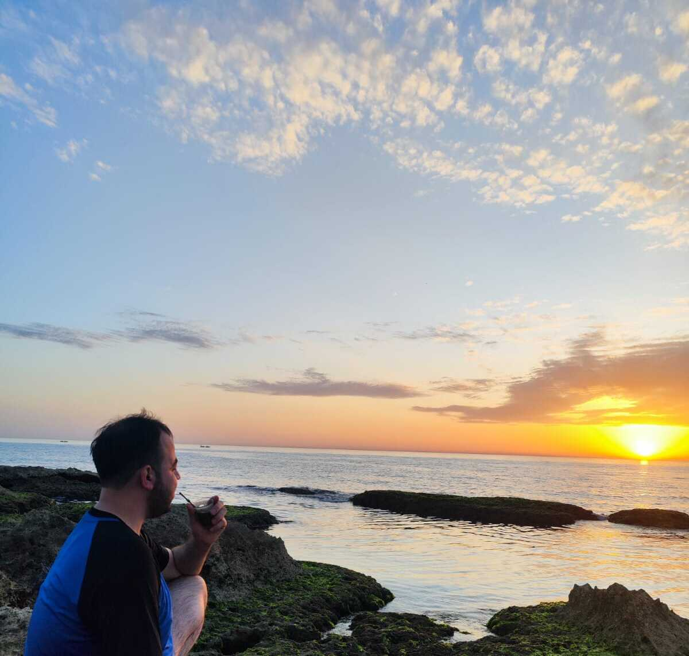

During my Bachelor’s degree in Software Engineering, I was introduced to cryptography through a single course. My real passion for the subject started during my Master’s degree. During COVID, I began reading on my own about the beautiful mathematics behind isogenies and how they can be used to establish a shared key between two parties. (That’s also why I chose the name isogeniest for my GitHub, even though I am no longer working on isogenies.)
The real fun started when I moved to IIT Roorkee for my PhD. I was lucky to meet my supervisor, Sugata Gangopadhyay, and my colleague—who later became a close friend—Vikas Kumar. Together, we started a small lab that we called QSDAL, where we spent a lot of time learning, discussing research ideas, and sometimes even talking about philosophy and more. We enjoyed our progress, even when it was small.
Beyond research, I enjoy foosball, drinking yerba mate, and swimming—especially in the Mediterranean Sea, where I grew up in a small but beautiful city that, despite everything, still feels very special to me.

A quiet moment by the Mediterranean